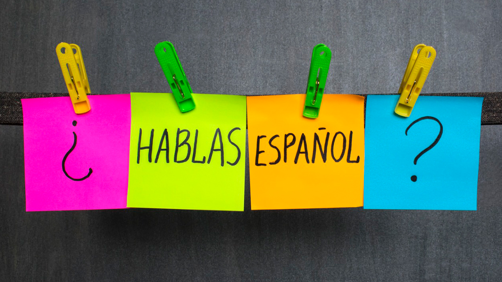

Oi caro leitor, eu sou o Davi Mota, e Desde pequeno sempre tive curiosidade por videogames e programação. meu interesse por jogos começou quando joguei Undertale e vi que o pessoal criava mods pro jogo, isso me fez ter interesse em aprender a programar, e com o tempo fui aprendendo e criando paixão pela área da TI.
Habilidades
GitHub
Eu aprendi a utilizar o GitHub inicialmente com a professora Israely, depois fui aprendendo com vídeos no youtube e com tentativa e erro, e hoje consigo utilizar a plataforma para hospedar meus projetos e compartilhar códigos, não é raro me ver postando experimentos malucos que fiz em python ou html então você deveria me seguir!!. (você pode me seguir na seção de contato)
Python
Tenho conhecimentos em Python e utilizo a linguagem para praticar lógica de programação e desenvolver alguns pequenos projetos, python é a primeira linguagem de programação que aprendi, e por isso, tenho um grande apego a ela, nessa ótica, eu to sempre tentando inovar com o python.
HTML
Utilizo HTML para criar e organizar a estrutura das páginas dos meus projetos web, essa página que você esta lendo agora é, um exemplo de como posso utilizar a linguagem para criar conteúdo de forma organizada e contida.
CSS
utilizo CSS para deixar minhas paginas web mais bonitinhas e estéticas, eu aprendi css em grande maioria com videos do youtube e, com o tempo fui acumulando conhecimento e hoje consigo criar páginas web com um design agradável e funcional.
Inglês
o priméiro contato que tive com inglês em que tive que ativamente tentar aprender, foi com a franquia de twisted metal de PS2 (eu queria saber o que speed e force significavam, por exemplo), e depois disso, fui aprendendo inglês com jogos, filmes e séries, e hoje consigo ler e escutar perfeitamente, ainda que eu so consiga falar e escrever de forma básica em inglês,
Composição
Estudo composição musical com foco principalmente na criação de músicas para jogos, e lembro que depois de aprender inglês a ponto de conseguir assistir a videos, apareceu umde composição musical, e eu não entendi NADA!!, mas apos alguns anos de estudo e pratica, hoje tenho um conhecimento considerável em teoria musical e composição.
Ferramentas
- GitHub
- ChatGPT
- Documentação CSS
- Fóruns online
Projetos
Esse site é um projeto, não é?
Esse site é um projeto que estou desenvolvendo para aprender mais sobre HTML e CSS. Ele é um portfólio pessoal onde compartilho meus projetos, habilidades e informações sobre mim tem sido um projeto muito educativo, cheio de aprendizado e desafios, que me permitiram melhorar as minha habilidade de web desing, organização e planejamento. (a imagem abaixo é uma foto de uma versão mais antiga do site)

Atualmente...
atualmente, estudo espanho pelo centro cearense de idiomas, estou estudando porque ira eventualmente abrir mais portas no meu futuro. Além disso espanhol é lingua que eu consideiro bonita e gosto da prónuncia, ao fim dos 3 anos no CCI espero alcançar o nivel de espanhol intermediário, e conseguir me comunicar com pessoas de outros países.

atualmente sempre que tenho tempo livre dedico a aprender gamedev, que é uma area da progromação mais focada na criação de jogos, é a area que me fez entrar na TI e ainda espero seguir carreira na área algum dia.